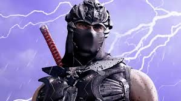
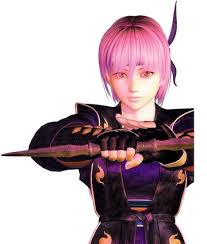
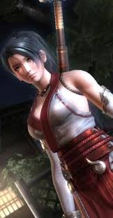
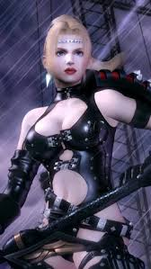

Ninja Gaiden II
"Ninja Gaiden 2" refere-se a um clássico jogo de ação hack and slash da Team Ninja, que recentemente recebeu um relançamento em versão refeita, intitulado "NINJA GAIDEN 2 Black", disponível para plataformas modernas.
O jogo coloca o jogador no controle de Ryu Hayabusa, um guerreiro ninja, em sua luta para impedir que clãs rivais e demônios ressuscitem uma entidade maligna chamada Archfiend. O título é conhecido por sua jogabilidade técnica, combates brutais e dificuldade elevada.
1-ogabilidade e Combate: A jogabilidade é focada em ação rápida e fluida, com um arsenal extenso de armas, cada uma com seus próprios combos e estilos de jogo. O sistema de combate permite o desmembramento de inimigos, um elemento visual visceral que pode ser ativado ou desativado na versão "Black".
2-Dificuldade: A série é famosa por seu nível de desafio, e este jogo não é exceção. Dominar os combos e as técnicas de esquiva é crucial para progredir. A versão "Black" fez alguns ajustes nos chefes em comparação com o original, o que pode desagradar alguns fãs de longa data.
3-Progressão: Os jogadores podem coletar orbes roxos para desbloquear habilidades e usar dinheiro do jogo para comprar itens e aprimorar armas em lojas específicas.
4-Duração: Concentrando-se nos objetivos principais, a versão original de 2008 de Ninja Gaiden II tem cerca de 14 horas de duração, enquanto a versão "Black" mais recente leva aproximadamente 9 horas para ser concluída.
Personagens:
Os principais personagens de Ninja Gaiden 2 (incluindo as versões Sigma 2 e o recente remake Ninja Gaiden 2 Black de 2025) dividem-se entre protagonistas jogáveis, aliados e vilões centrais:
Personagens Jogáveis:
Ryu Hayabusa:
Ryu é o epítome do ninja moderno. O design elegante de seu traje lendário Falcão Negro é semelhante ao de um agente de operações especiais contemporâneo, enquanto as botas tabi, o capacete ninja, a máscara, o cachecol e as caneleiras/protetores de antebraço remetem aos antigos guerreiros ninja. Fisicamente, Ryu Hayabusa é um jovem de pouco mais de 20 anos, com 1,78 m de altura e 78 kg. Ele está em excelente forma física, com um físico musculoso. Como ninja, a maioria de seus trajes e vestimentas esconde seu rosto, revelando apenas seus olhos, uma de suas características mais marcantes. Os olhos de Ryu possuem uma vibrante coloração verde com um leve tom dourado. Esse tom dourado se destaca ainda mais quando combinado com seu guarda-roupa, composto principalmente por cores escuras, o que realça ainda mais seus olhos peculiares e lhe confere uma aparência intimidadora. Por baixo da máscara e do capuz ninja, revela-se um rosto jovem e bonito, com cabelos castanhos quase sempre presos em um rabo de cavalo, uma aparência completamente oposta à que muitos esperariam, dadas suas habilidades mortais e a brutalidade calculista e selvagem em batalha. (No entanto, o rabo de cavalo foi alterado para um corte reto no OVA).
Como ninja, Ryu mata seus inimigos impiedosamente, executando-os de forma fria, técnica e calculista. Sua educação rigorosa, aliada às inúmeras dificuldades e tragédias que sofreu, o forçou a endurecer suas emoções e aprimorar suas habilidades à perfeição. Ele não se intimida com as vidas que precisa tirar para proteger o equilíbrio do mundo, pois sabe que esse equilíbrio é mais importante. Ryu sabe que a vida seguindo o caminho ninja pode ser cruel e curta, especialmente para alguém da Linhagem do Dragão. Ele já sentiu em primeira mão a brutalidade dessa vida; viu Kureha , sua melhor amiga, ser assassinada bem diante de seus olhos, seu clã massacrado e ele próprio morto enquanto tentava salvar sua vila. Ryu suporta essas dificuldades com sua vontade inabalável, um espírito indomável demonstrado em seus feitos ao superar cada desafio e obstáculo, sobrevivendo até mesmo ao trauma da morte para retornar e buscar vingança.
Embora Ryu se importe pouco com o bem-estar de seus inimigos, ele ainda os respeita como guerreiro, chegando a nutrir respeito mútuo com alguns adversários, como Genshin . Fora das batalhas, Ryu é modesto e refinado, sendo popular entre os moradores de sua vila. Ele não só é um forte exemplo para ninjas em treinamento, como também é conhecido por sua bondade e gentileza, preocupando-se com a segurança de todos os habitantes de sua casa. Isso se deve ao fato de que cada membro do clã Hayabusa, do Jonin ao cadete, é tratado como família. Ryu possui o comportamento e a sabedoria de um homem muito mais velho do que ele, uma compreensão do mundo ao seu redor e do equilíbrio de poder dentro dele. Ele ignora a busca pelo poder, para o desgosto de seu tio Murai, não demonstrando qualquer curiosidade pelos poderes sombrios que habitavam a Espada do Dragão Negro . Quando lhe é dada uma escolha, ele opta por destruí-la em vez de consumir seus imensos poderes sombrios. Ryu também se recusou a manter sua contraparte divina, a Espada do Dragão Verdadeiro , sabendo que a existência desta arma perturba o delicado equilíbrio do mundo pacífico. [ 2 ] Em geral, as façanhas de Ryu lhe conferiram uma atitude muito diferente da maioria, pois ele compreende as coisas em termos mais abstratos e filosóficos. Ele adota uma natureza tranquila, fluindo livremente na maior parte do tempo, mas implacável e devastadora quando provocado. Ryu também é muito estoico, geralmente não falando muito. Costuma se expressar em profundos momentos de sabedoria, às vezes até mesmo menosprezando seus inimigos.
Ayane:
Principalmente devido à forma como foi tratada quando criança, Ayane possui uma visão desapegada e cínica da vida e é completamente movida pelo desejo de provar a si mesma e aos outros que ela é melhor do que aqueles que a condenaram. Como resultado, ela se tornou uma jovem determinada, forte e mortal. Ela também tem tendência a falar mal das pessoas (principalmente com Kasumi) e agir de forma antagônica. Devido à sua visão mais cínica, ela às vezes pode ser profundamente sarcástica, como quando cumprimenta Leifang durante o festival Tamabata com comentários mais farpados, bem como diz a um oponente derrotado que ele deve observar seu oponente durante a luta. Da mesma forma, ela não está acostumada com pessoas que lhe proporcionam interações amigáveis, como pode ser implícito em suas interações com Luna, Misaki e Honoka. No entanto, apesar de seu comportamento cruel, ela não é totalmente fria e sem coração. Ela forma relações de trabalho com as pessoas ao seu redor e até relacionamentos amorosos e emocionais, como sua admiração por Hayate e seu relacionamento pai-filha com Genra. No entanto, estas relações são tão importantes e significativas para ela que parecem ser o seu único apoio emocional e a sua razão de viver. Por exemplo, depois de perder Genra e Hayate ficar com raiva dela, ela tentou suicídio. Esta rápida decisão de tirar a vida pensando em perder o amor de Hayate pode ser um sinal de um lado mais emocionalmente instável de Ayane. Como a maioria dos outros shinobi da série, ela é devotada ao que acredita e segue o código de seu clã de todo o coração, disposta a assumir qualquer tarefa para sua aldeia, mesmo que isso signifique que ela possa morrer fazendo isso.
Momiji:
Momiji é uma jovem linda e esbelta com longos cabelos negros amarrados em um rabo de cavalo e olhos de avelã. Ela originalmente usava um traje branco Hayabusa ninja padrão, mas mais tarde adota uma roupa com um top branco sem mangas com bordas de fita vermelhas, calças vermelhas estilo kunoichi e botas de salto alto pretas e douradas. Em Ninja Gaiden 3, ela carrega o Olho do Dragão como um colar, e o usa para amplificar seus poderes espirituais, como usá-lo para curar Ryu quando ele é encontrado inconsciente perto da aldeia de Hayabusa.
Momiji é uma jovem muito gentil e carinhosa que é vista pelas crianças da aldeia como uma figura irmã mais velha, a quem eles admiram. Ela é de fala mansa e muito respeitosa para com todos. Apesar de sua aparência, Momiji, muito parecido com seu mentor, Ryu Hayabusa, tem uma forte vontade e se recusa a aceitar quaisquer vulnerabilidades. Ela é uma guerreira dedicada que treina extensivamente para proteger a aldeia de Hayabusa a todo custo.
Junto com sua irmã mais velha Kureha, Momiji foi criada para ser uma Donzela do Santuário do Dragão. Ela foi encarregada de manter as antigas relíquias passadas pela Aldeia de Hayabusa da antiga Linhagem do Dragão e realizar os ritos e rituais do Santuário Maiden para purificar o mundo de forças malignas maliciosas. Entre as relíquias que as Donzelas do Santuário do Dragão foram encarregadas de guardar está o Olho do Dragão, uma jóia que se diz conter as almas dos antigos Dragões. Ao contrário de Kureha, Momiji foi poupada do destino de sua irmã mais velha durante o incidente da lâmina do dragão escuro. Na época, Momiji estava longe da aldeia em um recado apenas para voltar para uma aldeia arruinada. Ela ficou devastada com a perda das muitas vidas, especialmente sua irmã mais velha. Momiji começou a treinar sob Ryu por precaução e acabou se tornando um kunoichi habilidoso, juntamente com suas habilidades de Shrine Maiden para o bem da Vila Hayabusa. Ela apoia e segue seu mestre sempre que ele aparece.
Rachel:
Rachel e sua irmã gêmea Alma são aflitas com uma maldição de sangue que transforma os seres humanos em demônios. Pelos acontecimentos de Ninja Gaiden, a maldição consumiu Alma. Acreditando que não há cura para sua condição, Rachel procura Alma através de grande parte de Ninja Gaiden, a fim de matá-la para redimir sua alma.
Rachel a princípio aparece para Ryu como uma caçadora implacável e forte que se pergunta se Ryu é forte o suficiente para se levantar contra os demônios, para esse assunto ela age sozinha fazendo o seu caminho através do império Vigoor até que ela explica sua história para Ryu, que salva sua vida depois. À medida que a história continua, Rachel começa a confiar em Ryu, dando algumas informações sobre como chegar a Doku, mas mantendo sua forte atitude e comportamento duro. No entanto, no coração Rachel é mais sensível e emocional, entregando-se ao seu sentimento em relação à sua irmã Alma, apesar de ser um demônio. Ela escolhe não acabar com ela, revelando sua fraqueza ao inimigo. No final da jornada de Ryu, Rachel parece ser menos de uma cabeça quente e mais carinhosa, enquanto ela correu para um vulcão para salvar Ryu e ficar de lado Ryu quando Murai revela sua traição.
A maldição de sangue de Rachel a dota de força sobre-humana e uma capacidade inata de sentir a presença de demônios. Ela não é muito ágil, no entanto, e depende principalmente de sua força para dar golpes lentos, mas devastadores, em seus oponentes. Em Ninja Gaiden sua arma de assinatura é um Martelo de Guerra, mas em Ninja Gaiden Sigma 2 ela substitui o Martelo de Guerra pelo Martelo Inferno e ganha a Metralhadora Pesada Tipo 666. Como um caçador de Demônios, você precisa ter reflexos de alto nível, e Rachel se encaixa na descrição, sendo capaz de bloquear, esquivar-se ou combater os ataques devastadores de Fiends com relativa facilidade. Rachel é hábil nas Artes Mágicas, fazendo uso de dois feitiços: as Lâminas de Oroboros, e Magia da Afrodite Fúria.
Tutorial:
Para zerar Ninja Gaiden 2, foque em dominar o combate ágil, usando combos, esquivas e as Ninpo (magias), explore as missões secundárias para liberar upgrades de armas e itens, gerencie bem suas Essências (cura), e aprenda os padrões dos chefes, especialmente nos capítulos finais (13 e 14), pois o jogo exige reflexos rápidos e estratégia constante, principalmente na dificuldade Master Ninja
Domínio do Combate:
1-Esquiva/Rolamento (Roll): É sua melhor defesa e forma de reposicionamento. Use-a constantemente para evitar ataques e se aproximar de inimigos.
2-Ninpo: Use magias como a Fire Wheels (Rodas de Fogo) para controle de grupo e ataques à distância. Elas consomem Essências, então use com sabedoria.
3-Combos: Combine ataques leves e pesados para executar combos variados e eficientes.
Gerenciamento de Recursos:
1-Essências: Coletar Essências azuis (vida) e vermelhas (Ninpo) é vital. Pare de atacar e se movimente para coletá-las sem se expor.
2-Itens: Compre itens de cura e outros power-ups na Loja do Falcon quando puder.
Progressão e Missões:
1-Missões Secundárias: Faça as missões que liberam novas armas ou melhorias. Algumas são focadas em plataforma, outras em combate intenso.
Missões Secundárias: Faça as missões que liberam novas armas ou melhorias. Algumas são focadas em plataforma, outras em combate intenso.
Estratégia contra Chefes:
1-Aprenda Padrões: Observe os ataques dos chefes. A maioria tem sequências previsíveis que você precisa memorizar.
2-Use o Ambiente: Às vezes, há pontos estratégicos ou itens de cura nas fases dos chefes.
3-Foco nos Vulneráveis: Ataque após os inimigos terminarem suas sequências de ataque.
Dificuldade:
.Se estiver no Master Ninja, prepare-se para hordas massivas de inimigos, especialmente nos capítulos 13 e 14. A dificuldade aumenta drasticamente, exigindo perfeição no combate. Lembre-se, Ninja Gaiden 2 é um jogo de ritmo e precisão. A persistência e o aprendizado com cada morte são cruciais para zerar a Espada Sombria!
Vídeo: